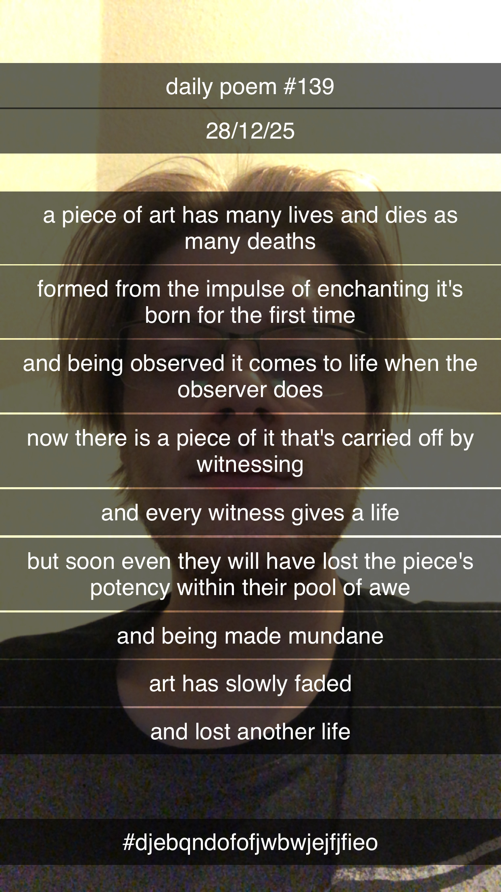

The Lives and Deaths of Art
A piece of art has many lives and dies as many deaths
Formed from the impulse of enchanting it's born for the first time
And being observed it comes to life when the observer does
Now there is a piece of it that's carried off by witnessing
And every witness gives a life
But soon even they will have lost the piece's potency within their pool of awe
And being made mundane
Art has slowly faded
And lost another life
